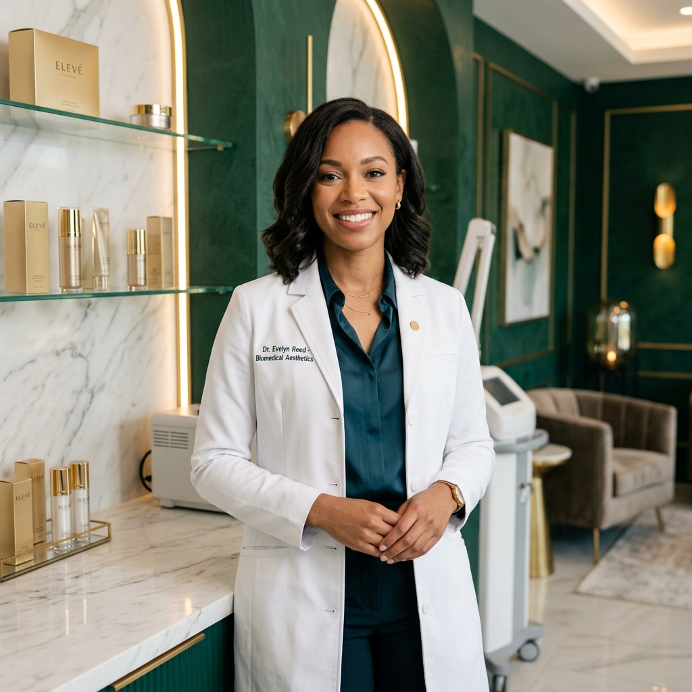

Protocolos biomédicos integrativos de alto padrão desenvolvidos sob medida para restaurar a juventude celular, gerenciar o envelhecimento e realçar seus traços com naturalidade absoluta e excelência clínica.

Abordagem baseada na fisiologia celular e no uso estrito de injetáveis premium biocompatíveis.
Diagnóstico tridimensional da anatomia facial para criar cronogramas de tratamento personalizados.
Suavização elegante e refinada que valoriza a simetria facial original sem exageros ou artificialismos.
Procedimentos estéticos isolados oferecem resultados passageiros. O verdadeiro rejuvenescimento baseia-se em tratar a saúde celular em fases integradas, reestruturando a derme de dentro para fora.
Focada no controle inflamatório, desintoxicação e reestabelecimento da barreira de proteção cutânea. Prepara o ecossistema da pele para receber e absorver nutrientes de alta performance.
Aplicação de indutores biológicos para estimular fibroblastos, multiplicando a síntese de colágeno endógeno. Devolve a densidade, firmeza e sustentação perdidas nas camadas profundas.
A etapa final e artística. Aplicação de toxina botulínica e preenchedores de ácido hialurônico para suavizar rugas e esculpir contornos refinados sobre uma pele previamente densa e saudável.
A partir dos 25 anos, a produção natural de colágeno pelo organismo decai gradativamente cerca de 1% a cada ano. Sem um gerenciamento celular ativo e focado na bioestimulação profunda, a pele perde espessura, viço e sustentação, acelerando o surgimento de rugas e flacidez profunda. Gerenciar a pele é um compromisso científico com o futuro da sua beleza.
Realce sua harmonia facial através de tratamentos inovadores de alta precisão clínica. Resultados elegantes, seguros e com rápida recuperação.
Modulação precisa da força muscular para atenuar rugas dinâmicas da testa, glabela e "pés de galinha". Oferece um olhar rejuvenescido, descansado e sutil.
Uso de Ácido Hialurônico de alta pureza para restaurar volumes perdidos em áreas como mandíbula, malar (maçãs do rosto) e mento, além de esculpir lábios hidratados e definidos.
Tratamento revolucionário de rejuvenescimento de dentro para fora. Substâncias biocompatíveis que estimulam o próprio corpo a produzir colágeno novo, reduzindo a flacidez facial.
Especialista certificada em procedimentos injetáveis de alta complexidade e gerenciamento de envelhecimento facial, a Dra. Mary Conceição fundamenta sua prática clínica na intersecção entre a biologia celular e a harmonia artística. Com dedicação absoluta aos protocolos individualizados, ela é reconhecida pelo cuidado minucioso, integridade ética e busca incessante por resultados sofisticados e extremamente elegantes.
"Acredito que a verdadeira beleza não reside em transformar suas características originais, mas sim em aliar a alta precisão científica com a sofisticação de resultados sutis e saudáveis."
A maior evidência da nossa dedicação científica reflete-se na felicidade e satisfação de quem confia em nossos cuidados.
"O tratamento de Gerenciamento de Pele mudou completamente o viço do meu rosto. A Dra. Mary é extremamente minuciosa e nos dá uma aula de biologia sobre o que está aplicando. Minha pele está mais firme do que há 5 anos."
"Sempre tive medo de ficar artificial com botox e preenchedores. A Dra. Mary fez uma avaliação tridimensional detalhada, me tranquilizou e o resultado ficou super elegante. Ninguém percebe que fiz procedimentos, apenas dizem que estou radiante!"
"Atendimento VIP exemplar. O consultório é extremamente sofisticado, e a atenção que a Dra. Mary dedica a cada detalhe é impressionante. Os bioestimuladores de colágeno deram uma firmeza espetacular para a minha derme."
Compreenda a ciência por trás de nossos tratamentos e sane suas principais dúvidas com total transparência clínica.
O Biomédico Esteta é um profissional da saúde altamente qualificado, com formação aprofundada na biologia e fisiologia dos tecidos e da pele. Ele é legalmente habilitado a realizar procedimentos estéticos invasivos não cirúrgicos, como aplicações de toxina botulínica, preenchedores dérmicos, bioestimuladores e peelings químicos profundos, aliando rigor de saúde com excelência estética.
Preencher ou paralisar rugas em uma derme que está desnutrida, flácida e desidratada gera um resultado artificial e pouco duradouro. O Gerenciamento de Pele atua estruturando o ecossistema celular em fases, melhorando a barreira cutânea, aumentando o colágeno profundo de sustentação e só então lapidando os contornos, garantindo um envelhecimento bonito, elegante e durável.
Como os bioestimuladores induzem uma reação biológica natural do seu próprio corpo (estimulando os fibroblastos a criarem colágeno novo), os resultados começam a ser percebidos visualmente a partir de 30 a 45 dias após a primeira sessão. O ápice do rejuvenescimento e melhora da flacidez ocorre por volta do terceiro mês, com benefícios que duram até 24 meses.
O procedimento é realizado utilizando agulhas ultra-finas (semelhantes às de insulina) de altíssimo conforto técnico. Além disso, utilizamos pomadas anestésicas tópicas de alta performance e resfriadores de pele no consultório da Dra. Mary, tornando a aplicação extremamente confortável e praticamente indolor para o paciente.
O espaço clínico exclusivo da Dra. Mary está localizado no condomínio corporativo mais sofisticado e moderno da região metropolitana de Sarandi/PR, com fácil acesso, estacionamento com manobrista e máxima segurança e privacidade para o seu atendimento VIP.